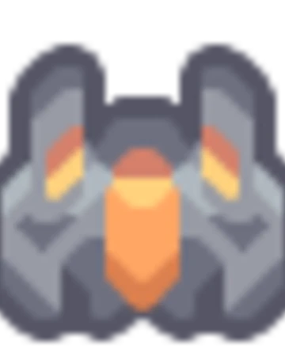
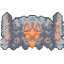
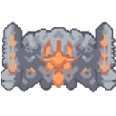

| Mindustry - About
> Mindustry to darmowa gra o tworzeniu fabryki i automatyzacji. Gracz przyjmuję role robota budowniczego i ma za zadanie zbudować jak najbardziej skomplikowaną fabrykę i system automatyzaji. Do tego może urzywać maszyn wiertniczych, fabryk, taśmociągów, i innych budynków automatyzujących. Gracz może wybrać pomiędzy kampanią lub przetrwaniem w falach. W kampanii gracz musi pokonywać poziomy które zawierają fale przeciwników lub bazy przeciwników. Gracz musi przejść poziom aby odblokować nowe budynki lub inne misje. Stają się one coraz trudniejsze i gracz musi włożyć więcej wysiłku aby pokonać wroga. Mindustry jest grą startegiczno-logiczną, i otrzymuje ciągłe update'y od jego twórcy i jedynego developera - Anuke.
> Statek startowy (zdjęcie powyżej) to statek "alfa", któy jest statkiem startowym gracza, jest on przeznaczony do zbudowania pierwszej fabryki i ulepszenia swojego statku później.
| Mindustry - Units
> Gracz w chwili spotkania fabryki przeciwnika jest praktycznie zmuszony do produkcji jednostek. Jednostki to małe mechy które atakują automatycznie bazę przeciwnika. Efektywnośc tych jednostkek głównie zależy od ich ilości, to znaczy że gracz musi wyprodukować jak najwięcej jednostek w danej chwili. Są jednak inne opcje, czyli ulepszanie jednostek. Gracz może ulepszyć jednostki i stworzyć wielkie roboty uzbrojone w lasery lub rakiety. Jednak takie jednostki wymagają wielkiego wysiłku i fabryki pełnej efektywności i zasobów.
 

| Mindustry - Download
> Mindustry można pobrać za darmo na itch.io na głównej stronie anuke lub na githubie. Jest też wersja na steam, która jest płatna (20zł), lecz pozwala graczą na modyfikowanie gry łatwiej. Itch.io Mindustry Strona wykonana prez: Patryk W. 1P ZSMEIE